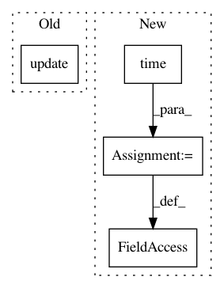

8648d437573e2e41b92b8fea13b4afe5e01851e8,baseline/tf/classify/training/eager.py,ClassifyTrainerEagerTf,_train,#ClassifyTrainerEagerTf#Any#Any#,76
Before Change
SET_TRAIN_FLAG(True)
for features, y in pg(loader):
lossv = self.optimizer.update(self.model, features, y).numpy()
batchsz = int(y.shape[0])
report_lossv = lossv * batchsz
epoch_loss += report_lossv
After Change
epoch_div = tf.keras.metrics.Sum()
nstep_loss = tf.keras.metrics.Sum()
nstep_div = tf.keras.metrics.Sum()
self.nstep_start = time.time()
@tf.function
def _train_step(inputs):
Replicated training step.
In pattern: SUPERPATTERN
Frequency: 3
Non-data size: 4
Instances
Project Name: dpressel/mead-baseline
Commit Name: 8648d437573e2e41b92b8fea13b4afe5e01851e8
Time: 2020-04-02
Author: dpressel@gmail.com
File Name: baseline/tf/classify/training/eager.py
Class Name: ClassifyTrainerEagerTf
Method Name: _train
Project Name: home-assistant/home-assistant
Commit Name: 80c187f8ea188ea3e63fd8e093ecf4284e1916c2
Time: 2017-06-26
Author: per.j.sandstrom@gmail.com
File Name: homeassistant/components/switch/verisure.py
Class Name: VerisureSmartplug
Method Name: turn_on
Project Name: home-assistant/home-assistant
Commit Name: 80c187f8ea188ea3e63fd8e093ecf4284e1916c2
Time: 2017-06-26
Author: per.j.sandstrom@gmail.com
File Name: homeassistant/components/switch/verisure.py
Class Name: VerisureSmartplug
Method Name: turn_off